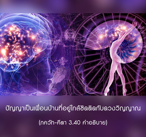

ประสาทสัมผัสต่างๆรวมทั้งจิตใจและปัญญาเป็นสถานที่พำนักพักพิงของตัวราคะนี้ ราคะปิดบังความรู้อันแท้จริงของสิ่งมีชีวิตผ่านตามจุดต่างๆหล่านี้ และทำให้เขาสับสนงุนงง
 ได้ยึดจุดยุทธศาสตร์ต่าง ๆ ภายในร่างกายของพันธวิญญาณ ดังนั้น องค์ชรีคริชณะทรงแนะนำสถานที่เหล่านี้ เพื่อผู้ที่ต้องการกำราบศัตรูจะได้รู้ว่าศัตรูอยู่ที่ไหน")



ศัตรู (ราคะ) ได้ยึดจุดยุทธศาสตร์ต่างๆ ภายในร่างกายของพันธวิญญาณ ดังนั้น องค์ศฺรี กฺฤษฺณทรงแนะนำสถานที่เหล่านี้เพื่อผู้ที่ต้องการกำราบศัตรูได้รู้ว่าศัตรูอยู่ที่ไหน จิตใจเป็นศูนย์รวมกิจกรรมของประสาทสัมผัสทั้งหมด ดังนั้น เมื่อเราได้ยินเกี่ยวกับรูป รส กลิ่น เสียง และสัมผัส โดยทั่วไปจิตใจจะเป็นที่รวมความคิดเพื่อสนองประสาทสัมผัสทั้งหมด ผลก็คือจิตใจและประสาทสัมผัสต่างๆ กลายเป็นศูนย์รวมของราคะ จากนั้นปัญญาก็กลายมาเป็นเมืองหลวงของนิสัยชอบราคะนี้ ปัญญาเป็นเพื่อนบ้านที่อยู่ใกล้ชิดติดกับดวงวิญญาณ ปัญญาที่ชอบราคะจะมีอิทธิพลต่อดวงวิญญาณทำให้เกิดอหังการ และเชื่อมสัมพันธ์ตนเองกับวัตถุ คือ สัมพันธ์กับจิตใจและประสาทสัมผัส ดวงวิญญาณมาหลงติดกับความสุขทางประสาทสัมผัสวัตถุ และเข้าใจผิดคิดว่านี่คือความสุขที่แท้จริง การแสดงตัวผิดของดวงวิญญาณนี้ได้อธิบายไว้อย่างงดงามใน ศฺรีมทฺ-ภาควตมฺ (10.84.13) ดังนี้
ยสฺยาตฺม-พุทฺธิห์ กุณเป ตฺริ-ธาตุเก
สฺว-ธีห์ กลตฺราทิษุ เภาม อิชฺย-ธีห์
ยตฺ-ตีรฺถ-พุทฺธิห์ สลิเล น กรฺหิจิชฺ
ชเนษฺวฺ อภิชฺเญษุ ส เอว โค-ขรห์
“มนุษย์ผู้แสดงตนว่าร่างกายที่ทำมาจากธาตุสามประการนี้คือตัวตนจริง พิจารณาว่าผลผลิตของร่างกายเป็นสังคญาติของตน พิจารณาว่าแผ่นดินที่เกิดเป็นสถานที่สักการะบูชา และไปยังสถานที่ศักดิ์สิทธิ์ของผู้แสวงบุญเพียงเพื่อไปอาบน้ำ แทนที่จะไปพบผู้มีความรู้ทิพย์ พิจารณาได้ว่าบุคคลเช่นนี้เปรียบเสมือนกับลาหรือโค”